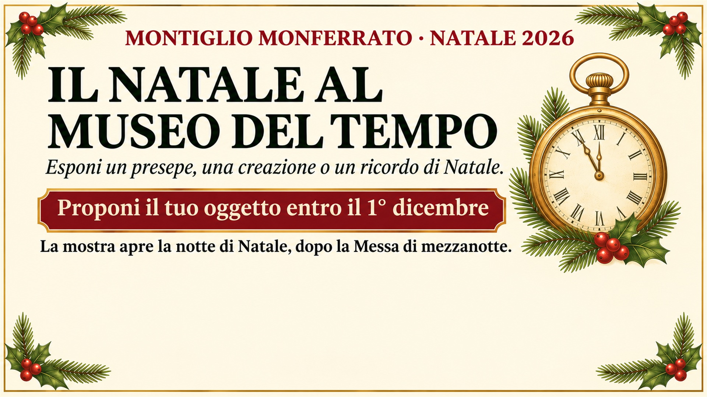

Il Natale al Museo del Tempo
Montiglio Monferrato · Natale 2026
Una mostra da costruire insieme
Un oggetto di casa tua può raccontare il Natale di tutti. Nel Natale 2026 il palazzo destinato al Museo del Tempo aprirà le porte in anteprima, prima dell’inaugurazione del museo.
Le sale ospiteranno presepi, creazioni natalizie e ricordi messi a disposizione dalla comunità. Famiglie, scuole, Pro Loco, associazioni e istituti sono invitati a partecipare con un oggetto da prestare o una creazione realizzata per la mostra.
Che cosa puoi esporre
Un presepe o una natività, un Gesù Bambino sotto campana di vetro, una boule de neige, un ricamo, una creazione artigianale, una cartolina d’auguri d’epoca o un altro oggetto natalizio con una storia da condividere.
Può essere un ricordo tramandato in famiglia, un lavoro fatto con le tue mani o qualcosa che ogni anno rende speciale il tuo Natale. Racconta perché lo hai scelto.
Proponi il tuo contributo entro il 1° dicembre 2026
Scrivi che cosa vorresti esporre, allegando una foto, le dimensioni e qualche riga sulla sua storia. Se stai preparando una nuova creazione, invia una breve descrizione.
Le proposte aiuteranno a organizzare gli spazi e l’allestimento. Gli organizzatori ti ricontatteranno per concordare i dettagli e la consegna.
Informazioni e adesioni: Piercarlo 339 8330008; Ferruccio 335 1410517.
Ci ritroviamo la notte di Natale
La mostra aprirà dopo la Messa di mezzanotte del 24 dicembre 2026, con un momento conviviale per scambiarsi gli auguri. Sarà visitabile in alcune giornate delle feste fino all’Epifania.
Gli oggetti saranno restituiti entro la fine di gennaio 2027.
Aiutaci a dare vita al futuro Museo del Tempo, cominciando dai tuoi ricordi di Natale.
